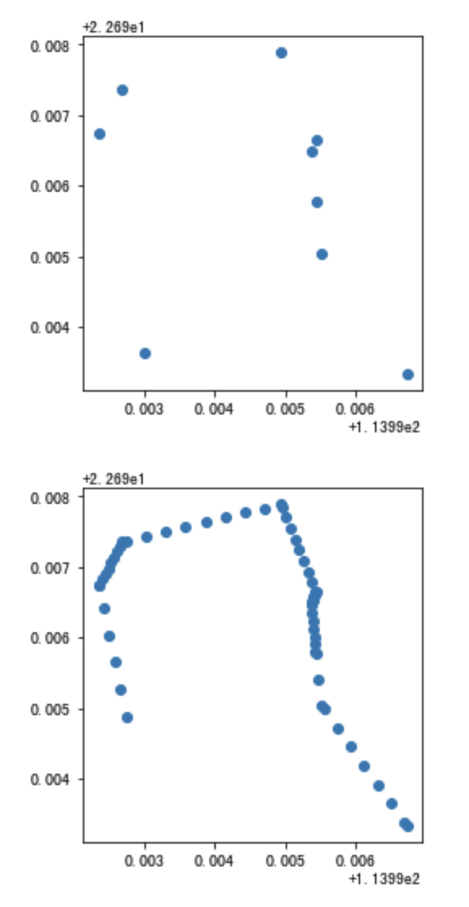

轨迹处理¶
停留与出行识别¶
-
transbigdata.traj_stay_move(data, params, col=['ID', 'dataTime', 'longitude', 'latitude'], activitytime=1800)¶
输入轨迹数据与栅格化参数，识别活动与出行
输入
- dataDataFrame
轨迹数据集
- paramsList
栅格化参数
- colList
数据的列名[个体，时间，经度，纬度]顺序
- activitytimeNumber
多长时间识别为停留
输出
- stayDataFrame
个体停留信息
- moveDataFrame
个体移动信息
-
transbigdata.plot_activity(data, col=['stime', 'etime', 'LONCOL', 'LATCOL'])¶
输入个体的活动数据（单一个体），绘制活动图
输入
- dataDataFrame
活动数据集
- colList
列名，分别为[活动开始时间，活动结束时间，活动所在栅格经度编号，活动所在栅格纬度编号]
轨迹线型生成¶
-
transbigdata.points_to_traj(traj_points, col=['Lng', 'Lat', 'ID'], timecol=None)¶
输入轨迹点，生成轨迹线型的GeoDataFrame
输入
- traj_pointsDataFrame
轨迹点数据
- colList
列名，按[经度,纬度,轨迹编号]的顺序
- timecolstr
可选，时间列的列名，如果给了则输出带有[经度,纬度,高度,时间]的geojson，可放入kepler中可视化轨迹
输出
- trajGeoDataFrame或json
生成的轨迹数据，如果timecol没定义则为GeoDataFrame，否则为json
轨迹增密与稀疏化¶
-
transbigdata.traj_densify(data, col=['Vehicleid', 'Time', 'Lng', 'Lat'], timegap=15)¶
轨迹点增密，确保每隔timegap秒会有一个轨迹点
输入
- dataDataFrame
数据
- colList
列名，按[车辆ID,时间,经度,纬度]的顺序
- timegapnumber
单位为秒，每隔多长时间插入一个轨迹点
输出
- data1DataFrame
处理后的数据
-
transbigdata.traj_sparsify(data, col=['Vehicleid', 'Time', 'Lng', 'Lat'], timegap=15)¶
轨迹点稀疏化。轨迹数据采样间隔过高的时候，数据量太大，不便于分析。这个函数可以将采样间隔扩大，缩减数据量
输入
- dataDataFrame
数据
- colList
列名，按[车辆ID,时间,经度,纬度]的顺序
- timegapnumber
单位为秒，每隔多长时间一个轨迹点
- methodstr
可选interpolate插值或subsample子采样
输出
- data1DataFrame
处理后的数据
使用方法
import transbigdata as tbd
import pandas as pd
#读取数据
data = pd.read_csv('TaxiData-Sample.csv',header = None)
data.columns = ['Vehicleid','Time','Lng','Lat','OpenStatus','Speed']
data['Time'] = pd.to_datetime(data['Time'])
#轨迹增密前的采样间隔
tbd.data_summary(data,col = ['Vehicleid','Time','Lng','Lat'],show_sample_duration=True)
数据量
-----------------
数据总量 : 544999 条
个体总量 : 180 个
个体数据量均值 : 3027.77 条
个体数据量上四分位 : 4056.25 条
个体数据量中位数 : 2600.5 条
个体数据量下四分位 : 1595.75 条
数据时间段
-----------------
开始时间 : 2021-11-12 00:00:00
结束时间 : 2021-11-12 23:59:59
个体采样间隔
-----------------
均值 : 28.0 秒
上四分位 : 30.0 秒
中位数 : 20.0 秒
下四分位 : 15.0 秒
进行轨迹增密，设置15秒一条数据:
data1 = tbd.traj_densify(data,timegap = 15)
#轨迹增密后的采样间隔
tbd.data_summary(data1,show_sample_duration=True)
数据量
-----------------
数据总量 : 1526524 条
个体总量 : 180 个
个体数据量均值 : 8480.69 条
个体数据量上四分位 : 9554.75 条
个体数据量中位数 : 8175.0 条
个体数据量下四分位 : 7193.5 条
数据时间段
-----------------
开始时间 : 2021-11-12 00:00:00
结束时间 : 2021-11-12 23:59:59
个体采样间隔
-----------------
均值 : 9.99 秒
上四分位 : 15.0 秒
中位数 : 11.0 秒
下四分位 : 6.0 秒
增密后的效果
#两辆车的数据测试
tmp = data.iloc[:10]
tmp1 = data.iloc[-100:]
tmp = tmp.append(tmp1)
#增密前数据
import geopandas as gpd
tmp['geometry'] = gpd.points_from_xy(tmp['Lng'],tmp['Lat'])
tmp = gpd.GeoDataFrame(tmp)
tmp[tmp['Vehicleid']==36805].plot()
#进行轨迹增密，设置5秒一条数据
tmp1 = tbd.traj_densify(tmp,timegap = 1)
import geopandas as gpd
tmp1['geometry'] = gpd.points_from_xy(tmp1['Lng'],tmp1['Lat'])
tmp1 = gpd.GeoDataFrame(tmp1)
tmp1[tmp1['Vehicleid']==36805].plot()
#轨迹稀疏化，20秒一条数据
tmp2 = tbd.traj_sparsify(tmp1,timegap = 20)
import geopandas as gpd
tmp2['geometry'] = gpd.points_from_xy(tmp2['Lng'],tmp2['Lat'])
tmp2 = gpd.GeoDataFrame(tmp2)
tmp2[tmp2['Vehicleid']==36805].plot()